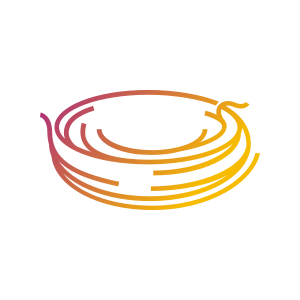

<mat-toolbar color="primary">
  <a routerLink="">
    <span class="left_span">
      
      TrackNest
    </span>
  </a>
  <span class="center_span">
    <button id="createBTN" mat-stroked-button class="hide" (click)="openDialog()">Add New Subscription</button>
  </span>
  <span class="right_span">
    <button mat-icon-button routerLink="/account" (click)="onNavigateAccount()">
      <mat-icon>account_box</mat-icon>
    </button>
  </span>
</mat-toolbar>
<div class="filler"></div>
<main>
  <router-outlet></router-outlet>
</main>
